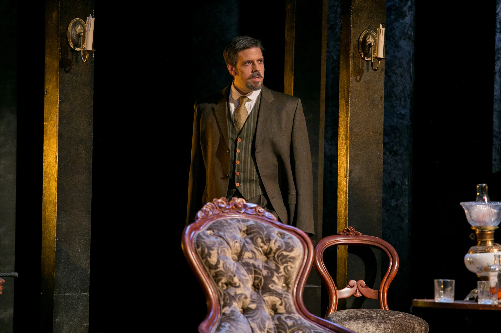
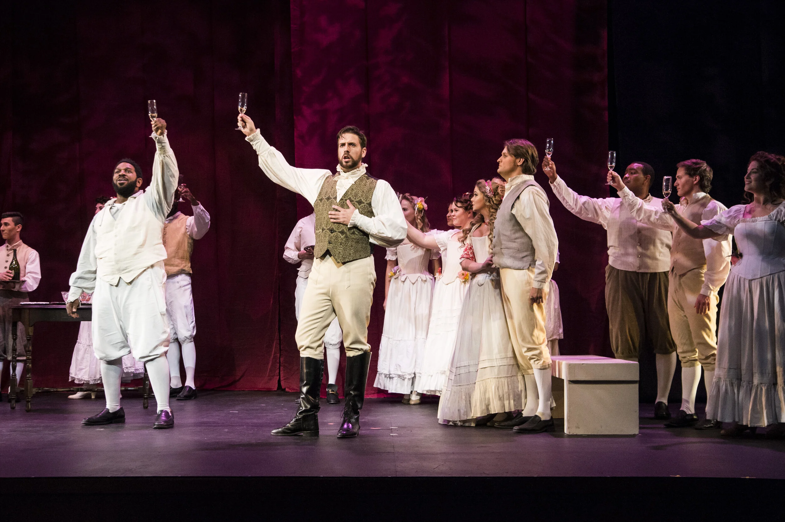
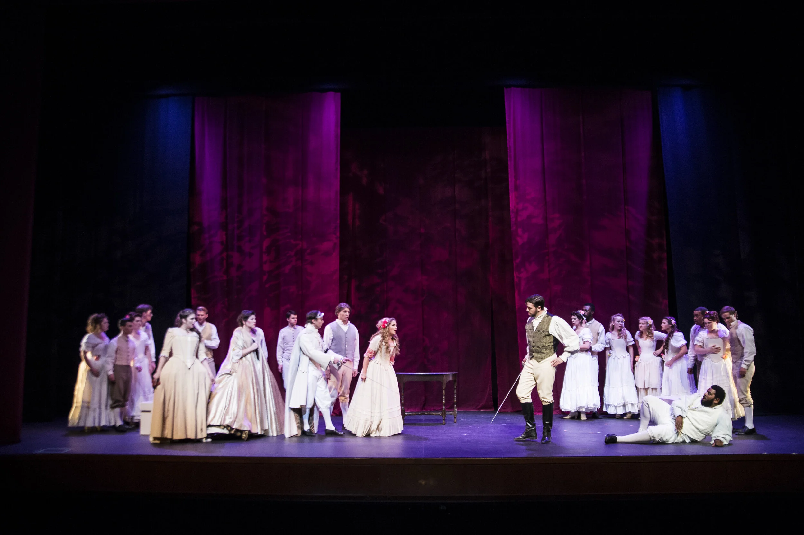
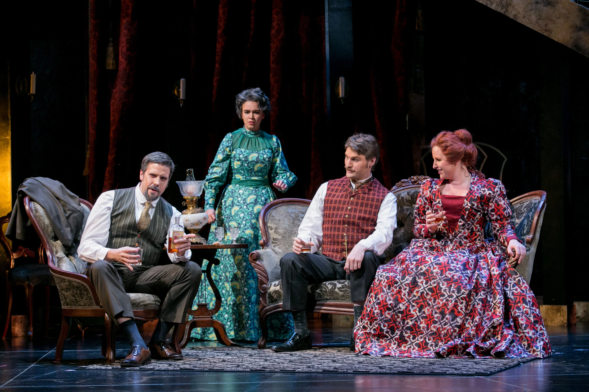

Photos & Recordings
Media
Selected recordings and stills from the stage — spanning recital, opera, and musical theatre.

Selected recordings and stills from the stage — spanning recital, opera, and musical theatre.
Selected recordings.
Stills from recent productions.






